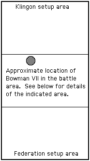
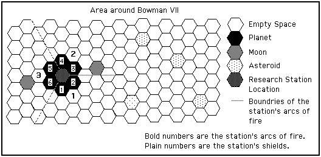

Scenario 11, prepared by David Ternes
Map.
There is one planet with two moons and four asteroids as shown on the setup chart.
|  |  |
Setup.
The setup locations are specified in the player information.
Victory Conditions.
These conditions do not cover all possible outcomes. The game master will have to use his own best judgement.
| Federation Victory |
Major | - | The Federation captures the research station intact, regardless of ship losses, provided the Klingons withdraw from the battle or are clearly beaten (so that they could not retake the station). | |
| Intermediate | - | The Federation captures the data (regardless of the station's status) and is not hurt too much worse in the fleet battle. | ||
| Minor | - |
The station is destroyed without the Federation getting the data and the Federation fleet hurts the Klingon fleet much worse than it is hurt.
Or The Federation captures the data (regardless of the station's status) and effectively is slightly beaten in the fleet battle. |
||
| Draw | - | Given the large number of factors involved in deciding victory, a draw should not be a likely result. One side or the other should be given at least a minor victory. | ||
| Klingon Victory |
Minor | - | The station is destroyed without the Federation getting the data and the Federation fleet has not hurt the Klingons notably worse than the Klingons have hurt the Federation. | |
| Intermediate | - | The station is not destroyed, the Federation does not get the data, and the Federation fleet only slightly beat the Klingon fleet in battle. | ||
| Major | - | The station and data are not captured and the Federation takes losses greater than those taken by the Klingons. | ||
| Modifiers | Federation | - | Large numbers of Federation Marines are lost at the station, especially if due to the self destruct device. Treat each unit of 640 Marines from an assault ship as a frigate for loss purposes. Marines from the warships may add a little to this consideration. This counts against the Federation. | |
| Klingon | - | The Klingons do not recover their Scientists and Technicians if they abandon the system. This counts against the Klingons, and extra heavily if the station is captured intact. | ||
Research Station.
General. The Research Station is set amid the ruins of an ancient city. The installation consists of a number of buildings surrounding two large, connected, central structures. The outlying buildings are support facilities and barracks. The main buildings are a research facility, and a planetary defense battery.
The station is organized into three units; the infantry, the battery crew, and the scientists. The infantry is two 100 man companies of standard Klingon ground troops, plus a 5 man "Explosives Experts" unit (205 troops in all). The battery has a crew of 100 who man the disrupters and shield generators. The scientific unit is 100 personnel.
In addition to the troops and battery, the installation has a Self Destruct Device.
Control Panel. A Ship Control Panel is provided for this installation (opens in a new window).
Self Destruct Device. The research station's self destruct device may only be activated in the Power Allocation Phase if; 1) the Klingon's Explosives Experts are in the station, 2) they are not involved in combat, and 3) the station control condition in the next paragraph has been met. The first attempt to activate the device will always be successful. A second attempt to activate the device once it has been disarmed has the same activation requirements as for the first attempt, plus the Experts must roll 1-5 on a D10 to get the device to work. The device may never be activated more than twice. The players are not aware of these odds and the 2 try limitation. The Federation forces may never activate the device.
Attempts to disarm the device may be made during the Melee Morale step of each round. To have the right to arm or disarm the device, the side must either be in complete possession of the station or must have inflicted more casualties (individual casualties are counted, not percentage of losses) on the enemy inside the station in the preceding melee combat step than they received. Only one side may have access to the device in any one round.
For the Klingon Explosives Experts to disarm the device the Experts must be in the station and not involved in combat. To disarm the device after its first activation, a roll of 1-6 on a D10 is required. To disarm the device after a second activation, a roll of 1-4 is required.
For the Federation explosives teams to disarm the device, a team must be in the station and not involved in combat. To disarm the device after its first activation, a roll of 1-5 on a D10 is required. To disarm the device after a second activation, a roll of 1-3 is required. Only one of the teams may attempt to disarm the device in one phase.
If the device detonates, all personnel in the station are killed and 1/2 of all personnel outside of the station are killed.
Ground Combat. Ground combat will work as for Melee Combat except as modified herein.
The research station is located in the center hex of the planet. Personnel beamed down to any other hex are out of the fight.
Each side must allocate personnel to fight inside or outside of the station. All Klingon personnel begin inside the station. All Federation personnel begin outside of the station. The Federation may not fight inside the station until it has defeated or achieved a 4/1 ratio against all Klingons outside of the station. Once able to fight inside the station, the outside restriction is permanently lifted from the Federation.
As long as there are personnel inside the station from either side, that side may beam personnel into or out of the inside of the station, although the station's shields must be down for this to occur. The shields do not interfere with beam downs which are outside of the station. Personnel may move between the inside and outside of the station prior to Melee Combat.
Federation heavy forces may only beam down and fight outside the station. They may not enter the station unless they abandon their heavy equipment. Abandoned equipment may not be remanned by either side. For each time the Large Cargo Transporter is used to move equipment to the planet, 20 Federation Marines, and only the assault ships' Marines, may be treated as having Heavy Equipment. Each assault ship may do this up to 32 times (640 Marines / 20). The amount of Heavy Equipment is limited only by the number of Marines an assault ship carries.
Securing The Station. Six consecutive combat rounds (equivalent of two turns) in uncontested control of the station are required for the Federation to extract the data from the station's computers. This must be done by an explosives team, which may not perform any other action during these six rounds.
If the Federation has uncontested control of the station for two consecutive rounds, they may declare that the weapons and shields have been disabled. Any Federation personnel may perform this disablement. This disablement is permanent for game purposes.
The Federation explosives teams may leave a destruct device in the station. This device will detonate in one turn (3 rounds) after being set. The activation of the device must be announced in the Melee Morale step. The device may be disarmed by anyone. When the device explodes the Research Center and Defense Battery are considered to have been destroyed. Anyone inside these structures will be killed by the explosion.
The Federation players must ask about this information, they should not be told they exist. If they ask, they should be told about the situation which they specifically request.
And More ...
Hopefully the astute game master will realize that there must be more to this scenario than has been presented so far. And he would be correct!